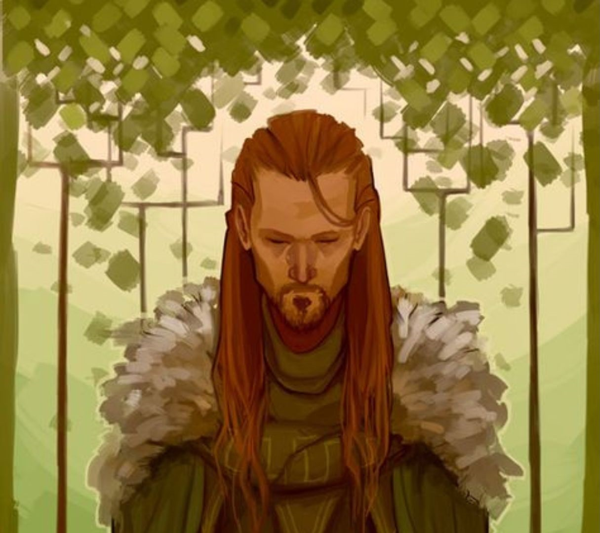
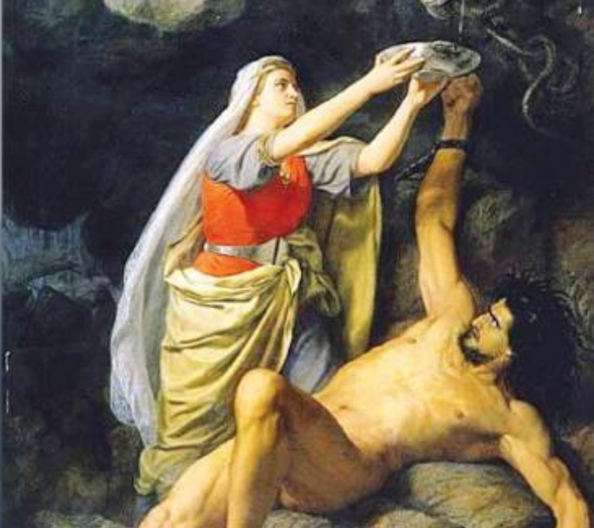
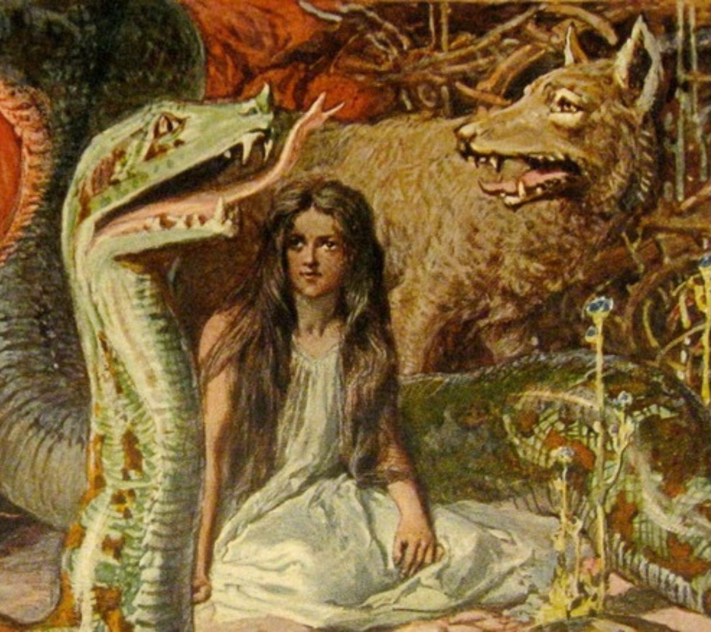

Loki is a god in Norse mythology. He is the son of Fárbauti (a jøtunn) and Laufey (a goddess), and the brother of Helblindi and Býleistr. Loki is married to the goddess Sigyn and they have two sons, Váli and Nárfi. By the jøtunn Angrboða, Loki is the father of Hel, the wolf Fenri and the world serpent Jørmungandr. In the form of a mare, Loki was impregnated by the stallion Svaðilfari and gave birth to the eight-legged horse Sleipnir.

Loki is often described as tall and slender, with sharp features and piercing eyes that reflect his cunning nature. His hair is commonly depicted as dark or fiery red and his expression can shift quickly from charming to mischievous. He is also a shapeshifter.

Loki’s life is full of tricks and complicated relationships. He lives in Asgard, despite not being a god. He uses his intelligence to solve problems, but also causes chaos and danger. Eventually, he becomes an enemy of the gods, playing a key role in the events leading to Ragnarök.

Loki has several unusual children. With Angrboda, he fathers Fenrir, a giant wolf; Jørmungandr, the world serpent; and Hel, the ruler of the underworld. He even transforms into a mare and gives birth to Sleipnir, Odin’s eight-legged horse in order to save Asgard.